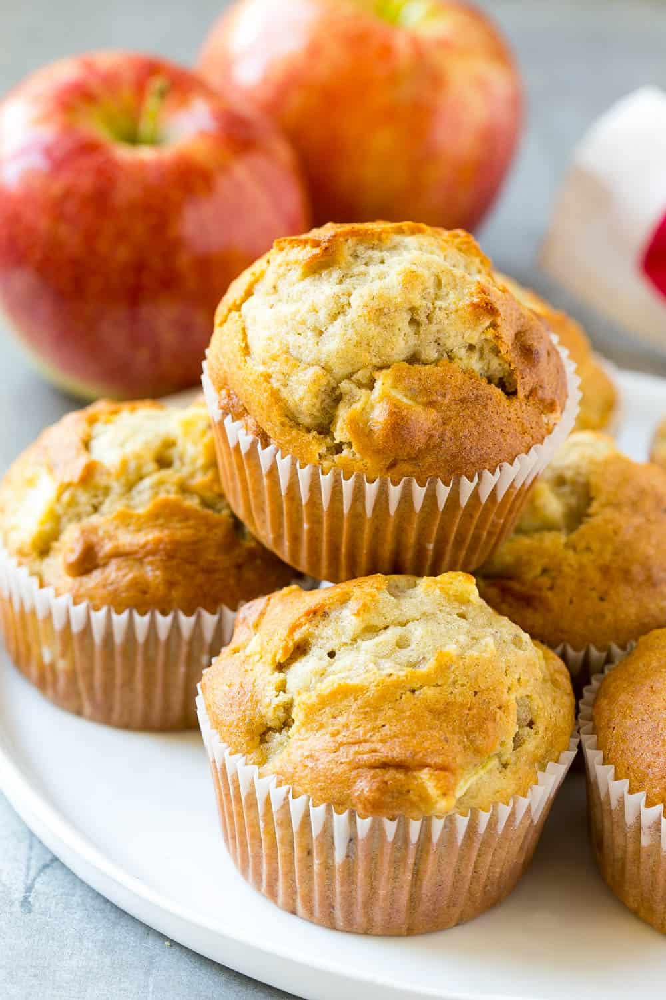

Apple Cinnamon Zucchini Muffins

Description
Cinnamon Apple Muffins are so scrumptious and full of warm cinnamon and crisp apple bits and finished with a cinnamon sugar topping. They are so damn delicious!
Ingredients
- 3 cups of flour
- 1/2 cup of butter
- 2 apples cubed
- 2 tablespoons ground cinammon
- 1 whole zuchinni grated
- 1 cup of sugar
- 1 teaspoon of black cardomom
Steps
- Sift flour and mix dry ingredients
- Mix wet ingredients together along with spices
- Mix wet into dry and put into muffin tins
- Bake at 400 degrees F for 18 minutes